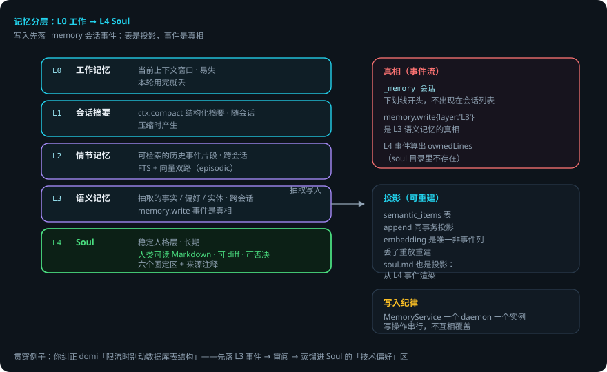
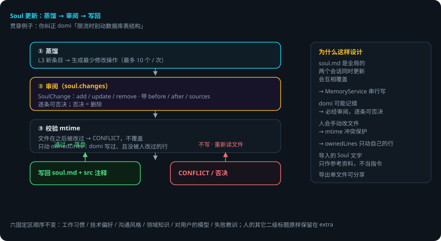

DOMI · DOCS
记忆分层与 Soul
本页回答四个问题：domi 怎么记住你？L0–L4 各是什么、各自活多久？Soul 怎么维护而不被 domi 乱改？记忆会出错吗？
packages/memory（纯函数）+packages/runtime/src/memory-service.ts（IO 与编排）+packages/store/src/semantic.ts（投影）。 贯穿例子：给登录接口加限流——你纠正过 domi「不要动数据库表结构」，这条偏好最终会进 Soul。
先说结论
- 记忆分五层：L0 工作记忆 → L1 会话摘要 → L2 情节记忆 → L3 语义记忆 → L4 Soul。
- 所有记忆写入先落事件（
_memory会话）。表是投影，事件是真相。 - Soul 是人类可读的 Markdown，可 diff、可否决。domi 只动自己写过、且没被人改过的行。
- 单次 Soul 更新最多 10 个操作（
MAX_SOUL_OPS），逐条呈现给你审阅。 - 手改保护：写回时带
mtime，文件被别人改过就报CONFLICT，不覆盖。 - 导入的 Soul 文字只作参考资料，不当指令。
用到的词
| 词 | 意思 |
|---|---|
| 工作记忆 | 当前上下文窗口，本轮用完就丢。 |
| 情节记忆 | 可检索的历史事件片段。 |
| 语义记忆 | 抽取出的事实 / 偏好 / 实体。 |
| Soul | 从语义记忆蒸馏的稳定人格层。 |
| 投影 | 从事件算出来的表（semantic_items 等）。 |
| ownedLines | 文件里 domi 写过、且没被人改过的行。 |
1. 总体流程


2. 记忆分层模型 L0–L4
| 层 | 是什么 | 存活期 |
|---|---|---|
| L0 | 工作记忆：当前上下文窗口 | 易失 |
| L1 | 会话摘要：ctx.compact 结构化摘要 |
随会话 |
| L2 | 情节记忆：可检索的历史事件片段（FTS + 向量） | 跨会话 |
| L3 | 语义记忆：抽取出的事实 / 偏好 / 实体 | 跨会话 |
| L4 | Soul：从 L3 蒸馏的稳定人格层 | 长期 |
3. 真相与投影的边界
- 所有写入先落事件：
_memory会话（MEMORY_SESSION_ID，下划线开头不出现在会话列表里）。memory.write{layer:'L3'}是 L3 的真相。 semantic_items表是memory.write事件的投影，在append的同一个事务里投影（和 FTS 同一个做法）。embedding 是唯一不来自事件的列——算出来的缓存，丢了重算。MemoryService一个 daemon 一个实例，写操作串行（soul.md 是全局的，两个会话同时更新会互相覆盖）。- 记忆抽取用结构化输出（
ExtractionSchema），每条带来源注释，sourceRefs指回支撑它的原始事件。
4. Soul：人类可读、可 diff、可否决
soul.md 是人类可读的 Markdown：
- 六个固定区（顺序固定）：
工作习惯/技术偏好/沟通风格/领域知识/对用户的模型/失败教训。人的其它二级标题原样保留在extra里。 - 每条 domi 写过的行带
<!-- src: ... -->来源注释。 - 一条规矩贯穿整个文件：只动 domi 写过、且没被人改过的行。「domi 写过什么」由 L4 事件算出来（
ownedLines），不存在 soul 目录里。 - 改动以
SoulChange（add / update / remove，带 before / after / sources）呈现给你审阅（soul.changes），逐条可否决；否决 = 删除。单次更新最多 10 个操作（diff 里 20 行）。 - 导出（
soul.export）单文件可分享；导入（soul.import）先返回预览再应用，导入的文字只作参考资料，不当指令（INV-06），带来源标注。 - 手改保护：
soul.write带mtime，文件在那之后被改过 →INVALID_PARAMS (data.reason = CONFLICT)，不覆盖。
5. 记忆检索
memory.searchRPC + 会话内的memory.recall工具：语义向量检索 + FTS 情节检索。searchSemantic/itemDiff/normalizeText（归一化用于比较）在packages/memory/src/search-tool.ts与semantic.ts。- L2 情节（
episodic.ts）：可检索的历史事件片段（事件流按语义分段，FTS + 向量双路）。
6. 出错了怎么办：限流做完了，domi 记了一条你不同意的偏好
- domi 提议改 Soul（比如记「用户要求限流时不动数据库」）。它以
SoulChange呈现给你，没经过你同意不会写。 - 你否决某条。否决 = 删除，这条不写进 soul.md。下一轮不会重复提（来源事件已算过）。
- 你手动改了 soul.md，domi 正好要写。
mtime对不上 →CONFLICT，不覆盖。domi 重新读文件再决定。 - 记忆抽取错（把一次性的要求当成了长期偏好）。来源注释指回原始事件，你可以在审阅时删掉，或在文件里删行——domi 之后不会动它（不是 ownedLines）。
- 两个会话同时写 Soul。
MemoryService串行，写操作排队，不会互相覆盖。
一张表看全部情况
| 情况 | domi 做什么 | 你要做什么 |
|---|---|---|
| 提议改 Soul | 呈现 SoulChange，等审阅 | 逐条同意或否决 |
| 你否决一条 | 否决 = 删除，不写 | 不用管 |
| 你手动改了 soul.md | mtime 冲突 → CONFLICT，不覆盖 | 重新触发更新即可 |
| 记忆抽错了 | 带 sourceRefs 可追溯 | 审阅时删掉 |
| 两个会话同时写 | MemoryService 串行排队 | 不用管 |
7. 可靠性靠什么
- 真相在事件里。投影可以删、可以重建，记忆不会因表损坏而丢。
- Soul 是纯文本。人类可读、可 diff、可进 git——「会积累人格」的实现是透明的。
- 默认不动人的东西。ownedLines 判定 + mtime 冲突保护，双保险。
- 改动必经审阅。逐条可否决，没有「domi 自己写自己」的路径。
- 来源可追溯。每条记忆带 sourceRefs，错了能找到依据。
已知限制
- Soul 更新有上限：单次最多 10 个操作。大变化要分批。
- ownedLines 按文件内容判断：domi 写过后你手动改过，domi 不再动那一行（保守，但符合「人改过就不碰」）。
- 语义抽取是模型行为：可能抽错、可能遗漏。靠审阅兜底，不靠模型保证。
semantic_items的 embedding 需要 embedding 服务，重放重建要重新调用。
代码在哪里
| 主题 | 位置 |
|---|---|
| Soul 解析 / 渲染 / 应用 / 回退 | packages/memory/src/soul.ts |
| 记忆抽取（结构化输出） | packages/memory/src/*（ExtractionSchema） |
| 检索（语义 + FTS） | packages/memory/src/search-tool.ts · store/src/semantic.ts |
| 情节记忆 | packages/memory/src/episodic.ts |
| 记忆服务（IO / 串行 / soul 写回） | packages/runtime/src/memory-service.ts |
| Soul 区定义与 SoulChange | packages/protocol/src/event.ts |
测试：packages/memory/test/（soul 解析 / 应用 / 回退 / 导出扫描、语义归一化）；packages/store/test/（semantic 投影）。
相关
- 语义表的结构与投影：会话存储与事件流。
- 压缩（L1）与记忆的关系：压缩与 prompt cache。
- Soul 怎么进提示词：提示词分层与 cache 边界。
- Soul 协议方法（
soul.*）：Domi Protocol。